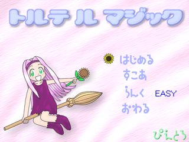

- Welcome to Touhou Wiki!
- Please register to edit. For assistance, check in with our Discord server or IRC channel.
Torte Le Magic
| トルテ ル マジック Torte Le Magic | |
|---|---|
|
 | |
| Developer |
Pietoro |
| Publisher |
Pietoro |
| Released |
May 04, 2001 |
| Genre |
Vertical Danmaku Shooting Game |
| Gameplay |
Single-Player Story Mode |
| Platforms | |
| Requirements |
|

|
Attention: This article is a stub and it needs expanding with more information related to the article's topic. If you can add to it in any way, please do so. |
Torute Ru Majikku (トルテルマジック, lit. "Torte Le Magic") is a free doujin vertical shooting game by former Amusement Makers member Pietoro, featuring characters from the manga 10 Carat Torte! (天からトルテ!) and music composed by ZUN specifically for this game.
Gameplay[edit]
Concept[edit]
Name[edit]
This game's title is often erroneously romanized as Toru Teru Magic or Toruteru Magic. The "Le" is a definitive article meaning "the" in French, thus a full English translation would be "Torte the Magic".
Story and Characters[edit]
Torte[edit]
Torte (トルテ torute) is the main character of the game who's role is the playable character. In the game, she appears with green eyes and long pink hair with what appears to be a purple hair band. She wears a purple dress and purple shoes. She also flies on a brown broom and holds a sunflower. When an image of her comes up with the dialogs, her hair band and dress shows to be black, and when casting spell card, an image shows up and her hair band and dress appears to be green. She is named after the pastry torte.
Chou[edit]
{kind=link}
Chou (シュー shuu) is the boss of the game. In the game, he appears with short brown hair and purple clothing. His eyes aren't shown in-game, but they're canonically black. He is named after the pastry dough choux cream.
Cointreau[edit]
{kind=link}
Cointreau (コアントロー Koantorou) is the true last boss of the game who can only be battled on normal mode. In the game, she appears to have yellow eyes and long pink hair. She wears a blue dress and blue shoes, along with having angel wings. She is named after the liqueur Cointreau.
Music[edit]
The game was originally released without any music. An update would later be released adding three music tracks contributed by ZUN. These tracks are in MIDI format instead of pre-recorded audio due to the low internet connection speeds at the time[1], and they will only sound as intended on a Roland SC-88Pro MIDI module. High quality recordings of these MIDI files made with this module can be found here.
An arrangement of "Witch of Love Potion" would later be included in ZUN's first CD, Dolls in Pseudo Paradise.
External links[edit]
- Torte Le Magic download
- Author's web page (web archive)
- ZUN's MIDI files played on a real SC-88Pro, including the Torte Le Magic soundtrack.